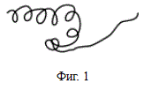

Беседа 3454 от 3877 · Беинса Дуно
Баща, майка и дете
Отче наш.
„Махар Бену.“
Имате ли зададена тема? – /Нямаме. Имаме систематизиране на думите./ Колко думи всичко са събрани? Най-много се повтаря една дума,12 пъти, тя е думата „живот“. След това имате 11, 10, 9, 8, 7, 6, 5, 4, 3, 2, 1. Една дума, която се употребява повече, тя е повече работила. Кои удове употребявате повече при ходенето? – /Краката./ При работата ръцете са нужни. Казваме: „Благост“. Благостта примирява две противоречия. Примирява 1 с 2. Двете само при едно може да се примири. Казвам: Как ще примириш едно противоречие? Представете си че Г-то представя глада. Как ще го примирите? Със Х – хляб. Гладът се примирява с хляба. Тия обикновените разсъждения не ви интересуват. Вас ви интересуват красивите неща. Вие искате някой човек да е облечен хубаво, с хубава дреха. Една скромна дреха, която може да ви топли, не ви интересува. Зимно време, когато е студено, на тия красивите дрехи ще видите тяхната слабост. Хубава е дрехата, но започваш да трепериш под нея. Лятно време е хубава цветистата дреха. Зимно време е хубава топлата дреха, която задържа топлината.
Всичките тия думи могат да ви послужат. Те са елементите на вашия успех, но трябва да поставите всяка дума на нейното място. По друг начин как може да систематизирате тия думи?
Сега пращат войника на бойното поле. Той носи своята пушка и среща на неприятеля. Неприятелят не го вижда, но мери и стреля. Върши една работа. Оставете сега морала, дали стрелянето е право или криво. Кое е право и кое е криво, то са наши понятия. Вие всички казвате, че вървите по правия път. Покажете ми един човек, който върви по правия път. Все като върви, ще кривне някъде. Няма същество, което да върви по правия път. Всички поддържате, че вървите по правия път. Какво разбирате под думата „прав път“? Безпрепятствен път, да бъде гладък, че като стъпите да ви е меко на крака, да е павиран пътя. Източните народи като отиват на Запад, дето улиците са хубаво павирани, само като ходят по улиците можеш да познаеш дали е от Запад или от Изток. Тези, които са от Запад, кракът им върви низко, не вдигат крака си и не тропат. Понеже улиците на източните народи не са така павирани, научени са да си вдигат крака високо и като върви на Запад по същия начин хлопа. Мислят, че може да си ударят крака. Аз правя заключението: Когато някой много говори, той е от Изтока, много говори, много хлопа. Когато малко говори, той е от Запада – павирани са улиците. Човек, като му се уредят работите малко говори. Като не са му уредени работите, много говори. Разправя, че жена има, деца има, дрехи нямал. Ще разправя за нищо и никакво. Срещне един, разправя, че е гладувал. Дойде втори и на него разправя, че е гладувал. Кое е най-хубавото да им каже? 10 души ви разправят, че са гладували. Какво ще им отговорите? Кой е най-умният отговор? Какъв отговор може да им дадете? Може да му кажете: „Аз ви облажавам, че сте гладували, много хубаво нещо е, няма нещо по-хубаво от гладуването. В глада ще изпиташ най-хубавите чувства. Ако не си гладувал няма да имаш този опит. Вие сте кандидати за най-хубавите блага в света“. Казвате: „Защо да гладувам?“ Хубаво, от тебе зависи да гладуваш. Казва: „Защо да гладувам?“ Защо гладуваш то е твой въпрос, не гладувай. Вие минавате покрай някоя улица и питате себе си: „Защо трябва да минаваш през тази улица?“ Питайте себе си защо трябва да минаваш през тази улица. Казваш: „Мене ми дотегна“. Щом ти дотегна една улица, мини по друга. – „Не мога“. Щом минаваш по нея има причини. Някаква фурна има наблизо, минаваш, поглеждаш фурната. Или някоя бакалница има, минаваш поглеждаш, нямаш пари да си купиш плодове, а само ги поглеждаш. Казваш на себе си: „Така е когато човек няма пари, ще гледа и ще се мъчи“. Какво трябва да прави да се не мъчи? Аз, ако съм, ще уредя въпроса след една година, след две. Как мислите, че ще го уредя? Мъча се за ябълки, ще посадя една ябълка и няма да се мъча. Мъча се за сливи, ще насадя 2–3 дървета и няма да се мъча. Или за череши се мъча, ще посадя череши. Казвате: „Кой ще ги чака?“
Колко думи бяхте употребили – 132. Значи, на гости сте викали думите. Най-много сте викали думата „живот“. От него се оплаквате, пък него викате. Много право сте постъпили. Защо се сърдите на живота понякой път? Аз подозирам, че вие не се сърдите на живота, но много близко го държите на себе си и понеже някой път като не е добре облечен, казвате: „Моят живот не е облечен, не е нахранен“ – Вземате храна. Постоянно роптаете. Казвате: „Как тъй животът да страда у мене?“ Че вие сте първият човек, който трябва да уреди вашия живот. Кои са елементите, които уреждат живота? – Светлината, топлината, въздуха, водата, храната, почивката. Едно бедно дете, което баща му и майка му всякъде го подтикват не му върви. Един ден това дете тръгнало подир един кон, на който имало един конник. Детето върви подир коня, конникът се обръща и го гледа защо върви подире му. По едно време конят се уплашил, паднал конникът от коня, изкълчил крака си. Детето идва да му помага. Конникът разбира защо това дете идвало подире му. Като го гледало най-първо казва: „Дотегна ли да вървиш подире ми? С мене можеш ли да ходиш?“ Детето разбира, че той ще падне от коня и в дадения случай то е, което може да му помогне. От този ден неговите работи се оправят. То като помогнало на конника и конникът му услужил. Понякой път не е лошо човек да тръгне подир коня. Какво означава коня? Конят е символ на ума. Значи като тръгнеш по пътеката на ума тогава той ще ти допринесе нещо. Като вървиш подире му той ще ти услужи. Вие понякой път искате да си помогнете във вашия ум. Чакайте конника на вашия ум да падне, че тогава ще се уреди работата. Казвам: При сегашния век, който е толкова обективен, който е само живот на фактите. Да допуснем кое е най-голямото недоволство, което имате, кое не ви достига? Светлина ли не ви достига, въздух, храна, вода, какво ви липсва на вас? Тези работи правят хората недоволни. Има и други работи разбира се.
Ако ви попитат: „Какво бихте желали да бъдете в света?“. Между златото и среброто какво бихте избрали? Какво бихте желали да бъдете? Ако си злато – ще бъдеш затворен, ценен ще бъдеш, но ще бъдеш затворен в някоя каса, заключен с ключ. Ще дойде онзи, ревнивият, ще отвори касата, ще ви погледне и пак ще ви затвори. Питам: В туй затворено състояние, ако имате едно съзнание на човек, ще бъдете ли доволен? Много добре са наредени парите в касата. Направена е с преградки – правоъгълни, квадрати, касетки, в които парите са положени. Да допуснем друго изяснение. Влезете в една стая, оставени са 10 вида плодове, оставен е хляб и вода вътре, и вие сте затворен вътре. С какво ще започнете най-първо? От кое ще започнете първо? 10 вида плодове имате, хляб и вода. С кое ще започнете? То е неизвестно. Имате 10 вида плодове, хляб и вода, всичко 12. Значи имате числото 12. С кой плод ще започнете? Естествено, някой от тези плодове ще ви привлече повече. Туй, което обичаш, то привлича. Което обичаш ще те привлече. Туй, което ти обичаш и което те обича ви привлича. Предметите, които са по-далечни, не се привличат. Обичта е закон на близост. Но тия близките неща, които се обичат, с тях става правилна обмяна. Всякога, колкото обмяната е по-правилна, обичта е по-силна. Колкото обмяната е по-неправилна, обичта е по-слаба. След като изядете една слива, какво ще ви даде, какво ще добиете от сливата? Аз задавам въпроса: Защо обичате сливата? Как ще ми докажете научно защо обичате сливата, на какво се обосновава любовта ви към сливата? Да кажем, че тя има син цвят, вие я обичате понеже този син цвят ви е необходим и затова сте започнали със сливата. Какъв е цвета на житото? – Жълт. Една пшеница в България казват червенка, една казват бяло жито, или пък да кажем, че вие имате жито – жълтия цвят. Може би имате и сливи с жълт цвят. Всичките храни са свързани с човешкия организъм. Някои храни са свързани с мозъка, някои храни са свързани с дробовете и някои със стомаха. От каквато нужда има организма, такава храна си търси. И в животните е пак същия закон. Понеже на животните е потребно малко умствена енергия, малко я търсят. Те търсят храна, която носи сила на организма. Понякой път не е безразлично, трябва да избираме разнообразна храна, да подхранва мозъка, да избираме храна да подхранва дробовете. Да избираме храна да подхранва стомаха, мускулната система. Съвременните учени хора ядат безразборно. Който е гладен яде храната и не знае тази храна, която възприема дали ще подкрепи ума му или сърцето му, или волята му. Всичко става безразборно. След като се наяде, пак е недоволен. Казва: „Липсва ми нещо“. На сегашните хора им трябва голяма култура. Сега имаме една култура с голяма несигурност. Всичката култура седи на една паяжина, всички уповават на парите. Здравият войник уповава на оръжието. Има 150 патрона, като ги изхвърли какво ще прави? Като ги изстреля где му е силата? Или друг има 150 наполеона, това са куршуми. Изхвърлиш ги и като употребиш 150 наполеона оставаш без пари. Значи останал си войник без патрони, какво ще правиш? Имаш пушка, през която стреляш куршумите, развали се пушката ти, какво ще правиш тогава?
В света трябва да дойдем до ония оръжия, които не се развалят. Такова оръжие е човешкия ум, човешкото сърце и човешката воля. Човешкото сърце е много съвършена машина. По-съвършена машина от човешкото сърце няма. 120 години тази малка машина изхвърля 300 милиона тона кръв. Имате цяло езеро. Една малка машинка е това. Та казвам: Вие понякой път седите и казвате, че сърцето тупа. Туй сърце като тупа говори. Вие не сте изучавали езика на сърцето. Взема се изобщо 72 удара в минута, децата имат 140, а старите имат 63. При децата имате 140, сборът е равен на 5. При старите имате 63, сборът е равен на 9. Средното е 72, сбора пак е равен на 9. Казвате: „Това не е важно“. Ти ядеш хляба, мислиш, че не е важно. Вършиш някаква работа, която мислиш, че е важна. Според мене най-важната работа, която хората вършат е с устата си. Тя е най-важната работа. Целия ден отваряш и затваряш устата си, три пъти на ден седнеш. Не само ти, но и всички хора изучават музика. Яденето е музика в природата. Имате една арфа от 32 струни. Като седнете започват музикантите. Най-първо тон дават. Тия малките, хапчици са един репертоар, който като турите, превръщат се от езика, той е капелмайсторът. Сега всичките тия работи вас ви се виждат безполезни. Да кажем вземете един писател, колко хиляди хора го знаят. Някой историк писал някаква история или вие напишете една история, колко хора ще четат вашата история? Може би 1000, 2, 3, 4, 5 хиляди души, но другите хора не се интересуват от вашата история. Казвате: „Голям историк, знаменит, голяма личност“. Целият свят не го знае. Всичко има 2 милиарда хора, но те не се интересуват. Или някой е поет. Колко души знаят, че Байрон е поет или че Пушкин е поет? Колко българи знаят за Пушкина? Кое е най-силното в поезията? Римуването най-първо, после поетът трябва да систематизира думите, той ги спогажда, римува ги, примирява ги, изглажда се, облагородява себе си, то е една работа. Ако един поет не може да примирява думите, тогава кажете ми сега. Римувайте ми сега 4–5 думи от тези. Ако кажете: „Живот, който е чист и красив.“ Най-първо, тия двете състояния какви са? Чистотата е вътрешно състояние, красотата е външно. Едното подразбира външни условия, другото – вътрешни възможности. Чистотата е вътрешен процес. Щом се наруши чистотата идат болестите. Всички болести произтичат от нечистота. Всички неудобства отвън в живота излизат от човека, който не е красив. Някой човек не е красив в постъпките, с този не се отнася добре, с онзи не се отнася, опълчват се хората против него. А чистотата е вътрешен процес. Та казвам ви: Вие самите затваряте пътя си. Всичките хора не мислят. Ти седиш, искаш да живееш добре. Дойде ти идеята за Бога казваш: „Кой знае къде е“. Най-първо хората нямат едно правилно отношение за Бога, не знаят как да мислят. Да допуснем, че какво ви трябва на вас някой да ви обяснява какво е Господ. Какво ще обясни философа както е Господ – [(2 + 1)2]10 – Какво разбирате сега? Какъв процес е това? Да допуснем, че това е едно статично положение. Това количествен ли е, или органически процес? Но това показва, че имате едно разумно същество. Само едно разумно същество може да напише тази формула.

Та казвам: Всички като станете сутрин трябва да мислите. Най-първо вие започвате с една мисъл, която не е организирана. Вие като станете казвате: „Днес безпредметен е животът ми, от мене нищо няма да стане“. Какво подразбирате, че от тебе нищо няма да стане. Какво подразбирате като кажете: „От мене нищо няма да стане“. Но вие употребявате политика. Вие като отидете на гости пък сте срамежлив, викат ви да ядете на трапезата, вие казвате: „Не съм гладен“, пък сте гладен и чакате да ви поканят пак. Ако сте при един българин, българинът е много внимателен, той ще ви покани 5–6 пъти и 10 пъти ще ви покани, казва: „Заповядайте“. У турците няма такъв навик. Той само веднъж ще ви покани, на всичките гости казва: „Буйрум“. Ако чакаш втори път, няма втори път канене, само веднъж ще те покани. Българинът е по-внимателен, той кани 3–4–5 пъти. Казва: „Гладът кани“. Гладният човек не го е срам. Поканил един турчин на гости и казва: „Буйрум“ и гостът разбрал, че 6 блюда има, а 7-то е най-хубаво. Стопанинът искал да каже, че има 6 блюда и няма друго вече. А гостът разбрал друго. Той разбрал, още има, най-хубавото ядене отзад. „Йоха“ значи много хубаво, или че нищо няма. Донесли 6-те блюда и гостът чакал последното, а последното – нямало нищо. Той чакал най-хубавото и после излязло, че накрая нямало нищо. Българинът казва: „Яж от 2, 4, 6-то блюдо, седмото не го очаквай. Който очаква 7-то остава гладен“. Между мозъка и дробовете има отношение, между стомаха и дробовете пак има известно отношение. Човек живее в три свята, които са затворени. Светът на неговата мисъл е затворен. Той не се съобщава с духовния свят, със света на сърцето. Светът на сърцето и той е затворен, и той не се съобщава със стомаха. Ние живеем в три свята, които са изолирани, имат само няколко допирни точки. Разговори или запознанства между чувствата не съществуват. Всеки свят е затворен. Мисълта е студена, мисълта не е топла, тя е студена. Чувствата са топли, а стомахът има сила. Там като влезеш, ще те обърнат 10 пъти, ще те накълцат и от тебе ще направят цяла каша, нищо няма да остане. Като влезеш в света на топлината, там ще турят може би толкова градуса топлина, че ти няма да можеш да издържиш. Като се качиш в ума, ще те изстудят. В ума като се качиш, най-малко ще ти дадат 150 градуса студ. Казва: „Красива е човешката мисъл“. При 150 градуса студ каква красота може да има? Влезеш в сърцето, ще ти дадат една топлина от 500–600 градуса, каква приятност може да има? Да не са 500, 200 да са. То е както опашката на лисиците, че били 3 метра дълги. И 100 градуса да са, каква приятност може да има. При 42 градуса топлина в човешкия организъм, човек умира. При 100 градуса каква приятност може да има? Значи, онази приятната топлина съдържа тия трептения, които са най-приятни, хармонични. Тя е организирана топлина. Онова, от което ти се нуждаеш тя го доставя. Тя не доставя онова, което човек иска. И с най-ниската температура, пак не доставя човек, което иска. Казвам: Приятна е онази топлина, която доставя онова, което човек желае. Онази топлина, която доставя необходимата храна, която е потребна или за ума, или за сърцето, или за човешкото тяло, тя е нужната топлина.
Да допуснем, че 1 е баща, 2 е майка, 3 е дете. С кого трябва да се запознаете най-първо. Както са поставени тук, работа им е дадена, всички са в динамично положение. Всички имат да вземат, никой няма да дава /втората формула/. Откъде ще започнеш да се запознаеш – с майката или с бащата. Ако речеш да се запознаеш с 2, с жената, опасна работа е. Най-първо ще се запознаеш с бащата, или с детето може да се запознаеш, двете няма да го буташ. После ще започнете с числото 2. И у българите е същото. Сега противоречието къде е? Умът сърце няма, затова търси сърцето. Сърцето ум няма, затова търси ума. Умът и сърцето стомах нямат, затова търсят стомаха. Стомахът пък ум и сърце няма, затова ги търси. Някой път, когато говорите за ума, че умът сърце няма, как ще го разберете? Мислите ли, че ако имаше умът сърце, щеше да мисли по-добре? Той щеше съвсем да загази. Сега вие имате тези въззрения, те са три отделни свята. Каква е функцията на сърцето в организма? Функцията е да изпраща кръвта по цялото тяло. Сърцето ще достави храна на целият организъм. То изпраща храната по всички области по тялото. То се грижи за прехраната на тялото. Това е икономически въпрос. При сегашните условия, щом спре сърцето да работи, спира самата прехрана и всички гладуват. И с човека се свършва. Каква е функцията на мозъка, на ума? /Една сестра направи движение с главата/. Олга направи едно движение, казва: „Така е, но и другояче може да бъде“. Поклати наляво главата на 1⁄10 от милиметъра. Аз забелязах движението в косите ѝ стана. Не наблюдавах цялата глава, но няколко косъма се помръднаха. Умът дава разрешение. За да имаме една ясна представа за ума във вселената, ума е който дава простор, широчина на всичко. Умът ни въвежда в безкрайните възможности на живота и казва: „Това е за вас. Това е за мене“. Но хиляди, милиони години трябва докато дойдете, да се ползувате. Някой ще каже: „Какво ме интересува всичката тази вселена. Мен не ме интересува за в бъдеще, но ме интересува, понеже практически аз имам нужда от нещо много малко, мене ме интересува тази широчина“. Сърцето казва: „Каквото искаш“ – свобода, подтик ще ти даде. Умът казва: „Ще ви запозная. Имам една приятелка, сърцето, това, което искате може да ви даде“. Сега вие се намирате в един организиран свят и не разбирате неговата организация. Дадат ви един орган или имате едно пиано. Всеки един от вас може ли да свири на пианото? Като натиснеш с един пръст на клавишите може да свириш. Ти удряш с един пръст по клавишите, но ако дойде един, който е запознат със законите на пианото, учил е 10–15 години, ще направи доста изменения и вие ще слушате една хубава мелодия. Един човек, който е запознат със законите на човешката мисъл, ще изкара нещо хубаво. Който не е запознат не може да изкара. Ще изкара такива недоносчета. Не знае колко тонове са, които си хармонират. Клавишите, както са турени, имате прима, секунда, терца. Бащата е прима, майката е секунда, детето е терца. Музикално изразявам идеята.
Сега за днешния ден каква ви е задачата? Да кажем, че вие всички имате известно разположение, една задача. Имате в ума си нещо, което мисли, имате нещо, което чувствува, после имате нещо, което искате да постигнете. Сега трябва да извървите известен път, по който мисълта върви. В мисълта има особени пътища, които се постигат – мислите. В сърцето има особени пътища, по които се постигат чувствата. В стомаха има други пътища, по които се постигат желанията на човека. В рамките на тия пътища нещата стават реални. Ако аз трябва да организирам музиката, ако аз трябва да създам един орган, колко години ще минат? Много трудна работа е да се създаде един орган или едно пиано, или една цигулка да се създаде, то е трудна работа. Вземеш цигулката, започнеш да свириш, то е по-лесно. Хиляди години са мислили безброй умове в това направление, но не само на земята, но и горе на небето са мислили, за този инструмент са работили хиляди и то гениални умове, докато го създадат. После хиляди умове са работили за да намерят начините как трябва да свириш, как трябва да работиш в музиката. Или искаш да мислиш, то е много сложен въпрос. Трябва да дойдат хиляди умове, да те научат как да мислиш, упътвания да ти дадат. Ние някой път се заблуждаваме и казваме: „Аз мога да мисля“. Не може човек сам да мисли. Ако човек може сам да мисли, кой би мислил. И Бог не е сам. Бог е безкрайно множество, в Бога всички мислят. Не само един да мисли, но когато всички мислят, това разбираме, че е Бог. Когато всички еднакво мислят, то е Бог. Когато всички ние мислим добре, и всички други мислят, тогава сме ний. При човека един мисли, при Бога всички мислят. А ние сме турили обратното, единият Бог пък хората са множество. Сега много хора как ще се примирят помежду си, когато интересите им са различни? Имате на физическото поле турени 10 чувала. Представете си, че имате в един чувал 10–100–200–300 кг. Имате 10 души, на физическото поле, работата става лесна. Като туриш, ще видите, че всеки ще си намери мястото. Дойде един, задигне 10 кила, втори задигне други 10 кила. Започнат да се нареждат съобразно силата. Най-последният, който взима последният товар, на него може да разчитате, той е най-силен. Човекът, който вдига голямата тяжест той е най-силен. Човекът, който може да носи най-голямата скръб и страдание, той е най-силен. Понякой път вие не искате да страдате, тогава вие сте слаб човек. Без скръб и без страдание силата на човек не може да се развие. Всички вие искате да бъдете знаменити в света, но за да бъдете знаменити в света, трябва да имате сила. В света, във физическия свят, ако дигате 5 кила, мислите ли че ще бъдете прочут между хората? Ни най-малко няма да бъдете прочут. Ако дигате 100–200 кила, 1000 кила, ако можете да дигнете 1 тон всички ще кажат: „Той дига цял тон с ръцете си“. Всеки ще се интересува какви са мускулите му, които могат да дигат такава тяжест. Да допуснем, че вие имате даден хубав глас в природата, който може да взима 4 октави. Такъв глас няма. В историята на музиката само една италианка, приблизително е пяла, е взимала както в цигулката три октави и половина. И тази певица е взимала три тона повече отколкото цигулката е. Но тия тонове не са вече така ясни. Сегашното ухо на човека едва е свикнало с две октави и половина. Тоновете на третата октава не са така вече ясни и приятни. Щом минавате вече в четвъртата октава, тия високите тонове дразнят. В човешката музика не са развити онези центрове, при които звуковете да стават съдържателни. Звукът не е съдържателен, не е определен. Аз наричам тази музика, 4-те октави, неорганизирана.
Та казвам: Противоречието в учението на религиозните хора и светските хора в какво седи? Религиозните хора са турили всичкото упование на Бога. Искат да накарат Господа навсякъде да работи за тях. Те като деца очакват от баща си да донесе нещо, а те се потриват. Светските хора не турят упованието в Господа, но те имат упование в себе си. Те казват: „Каквото ние направим, това е“. Казвам: И те са прави, но ако оставим ние всичко сами да правим, то е другата крайност. Тогава ще дойдете в една трудна задача и не може да я разрешите. Ще потърсите някой, който знае повече от вас, искате вас да ви върви в света. Сиромахът не трябва да дружи с бедни хора, той трябва да дружи с богати хора и ще стане богат. Онзи, който иска да стане умен, трябва да дружи с умни хора, ако дружи с глупави, нищо няма да научи. Онзи, който иска да стане силен, трябва да дружи със силни хора, те може да ти предадат нещо. Един слаб човек какво ще ти предаде? Следователно и в природата е така. Ти от силния може да вземеш нещо, но на слабия трябва да дадеш нещо. Щом идеш при силния, силният всякога дава, умният всякога дава, добрият всякога дава. Та казвам: Дружете тогава с умните хора. Мислено дружете с добрите хора, дружете със силните хора. Болният да дружи със здрави, не с болни. Ако с болни дружи, още повече болен ще стане. Сега вие когато видите някой човек по-учен от вас, заражда се едно чувство защо той да е по-учен. Че и от него има по-учени. Сега, ако съберете всичките учени хора на земята, съзнанията, които имат от хиляди години, ако съберете всичкото знание на цялото човечество, ако това знание сравните със знанието на един ангел, той ще знае повече отколкото цялото човечество. Най-слабият ангел в небето, знае повече отколкото всичките хора събрани от хиляди години. Един архангел, знае повече от всички ангели, събрани на едно място. И в незнанието има своята приятност. Да знаеш, че има да даваш 50 хиляди лева или да съзнаваш, че имаш да вземаш 50 хиляди лева, но да съзнаваш, че имаш да даваш, да съзнаваш, че днес ще те бесят или да съзнаваш, че днес ще те освободят от затвора все едно ли е? Та казвам: Процесите не са еднакви. Има процеси, които ограничават, има процеси, които освобождават в природата. Те са извън битието процесите, които освобождават. Процесите, които ограничават отпосле се явиха. Най-първо научете се на процесите, които освобождават. Не ограничавайте една мисъл, която ви дойде. Един искал да бъде милионер. Остави тази мисъл, ти я станеш, я не. Един турчин ходил в Цариград и като се върнал искал да зарадва ходжата, и като се върнал пита го ходжата: „Какво ново има в Цариград?“ Казва му: „Пък нищо ново. Новото е това, че решили в Цариград да те правят тебе Шейх-ил-ислям“. То е най-високото положение в Исляма, което може да заеме един човек. Казва му: „Не говори така, ти искаш да ме зарадваш“. Но като го срещнал след 1–2 седмици казва: „Може ли да ми разправиш за онова нещо, я ми кажи какво ми казваше. Разправи ми тази работа как е.“ Той сам знае, че няма да стане, но му е приятно да чуе. Аз се чудя на хората. Че вие имате най-високото положение. Всичките говеда в света биха дали всичкото богатство да имат вашата форма, вашата глава, вашето тяло. Следователно един човек знае повече от всичките говеда. Вие имате много неясно понятие за говедата. Това са разумни същества, само че са ограничени. Знаеш каква амбиция има в животните? И те са разумни, но са ограничени. Тук са свързани в затвор с букаи. Простор нямат. Вчера гледам двама души, вързали ги, карат ги. Ходили да крадат някъде, стражарят ги хванал и ги подкарал. Казвам: В дадения случай кое е важното? – Да съзнаваш, съзнание се изисква сега. Да съзнаваш, че имаш отношения, които трябва да изпълниш. Дал си една дума, трябва да държиш думата си, онова, което си казал да направиш. Всеки ден трябва да направиш по нещо. Казва: „Това е невъзможно“. Я си представете, че вие се намирате в едно здание, дето това здание е свързано с целия свят и ако знаете къде да бутате, всичко може да имате. Искате да се нахраните, бутнете едно копче, дойде храната. Искате да пиете вода, бутнете едно копче, дойде водата. Искате да имате съобщение отвън. Бутнете друго копче, всичко е наредено. Но представете си, че не знаете къде, как да бутате, вие сте ограничени, имате възможност, но не знаете да ги използувате. Сега всички вие имате възможности, но не знаете как да ги бутате. Бутате нещата дето не трябва, често правите погрешки. Един румънски свещеник пътувал от Гюргево за Букурещ, но си издал главата вън от прозореца и при едно движение паднала калимявката му. Дръпнал дръжката за спиране на влака, иде началникът и го глобява повече отколкото шапката му струва. Пита го: „Защо спряхте влака?“ – „Шапката ми падна“. Тренът се спира за много важна работа, за една шапка не се спира трена, затова го глобяват. Често и ние за малки работи спираме целия трен. Претърпяваме глоба, глобяват ни. И в природата има един закон, глобяват всеки човек. В природата не се спират процесите. Отишла шапката, благодари, че ти не си паднал, нова шапка ще си купиш, не спирай трена.
Съществува ли друга дума за недоволство? Значи няма специална дума за недоволство. Прибавяте една отрицателна частичка „не“ и тогава получавате думата. Какво разбирате под думата „недоволен“? Че туй, което е очаквал не е дошло на време. Недоволен е, че работата не е свършена добре. В думата „недоволен“ тури след частичката „не“ запетая и ще стане доволен. Или имате думата „немирен“, „немилостив“. Всеки човек в света в себе си иска другите хора да бъдат милостиви към него. И най-силният иска хората да бъдат снизходителни към него. Съществува такова състояние, да каже, „милостив е той“. Значи не употребява милостта. Но не съществува такова състояние, да кажем, да съществува някаква реална немилост в света. Малко употребената немилост, то е немилостив. Малко употребената милост, ние не я употребяваме изобилно.
Туй, което за всички е възможно, възможно е за едного. Туй, което за едного е възможно, възможно е и за всички.
Само светлият път на Мъдростта, води към Истината!
В Истината е скрит животът!
ХХI година.
3 лекция на Младежкия окултен клас,
държана от Учителя на 10. Х. 1941 г. петък, 5 ч. сутринта.
София – Изгрев.